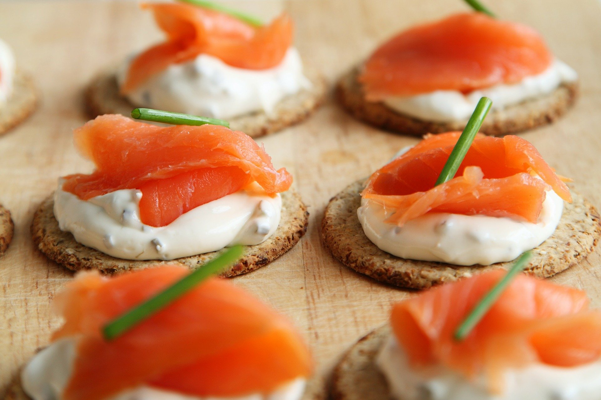

<div class="image-information-wrapper">
  
  
  

  <mat-list role="listitem" class="info-wrapper">
    <mat-list-item class="info" [ngClass]="{'dark': dark}"><i class="fas fa-utensils"></i>{{recipe.portion}}
    </mat-list-item>
    <mat-list-item class="info" [ngClass]="{'dark': dark}"><i class="fas fa-clock"></i>{{recipe.preparationTime}} min
    </mat-list-item>
    <mat-list-item class="info" [ngClass]="{'dark': dark}"><i
      class="fas fa-lightbulb"></i>{{recipe.difficultyGrade | titleCase}}</mat-list-item>
    <mat-list-item class="info" [ngClass]="{'dark': dark}"><i class="fas fa-star"></i>{{recipe.rating | number: '1.1-1'}}/5.0
    </mat-list-item>
  </mat-list>
</div>
